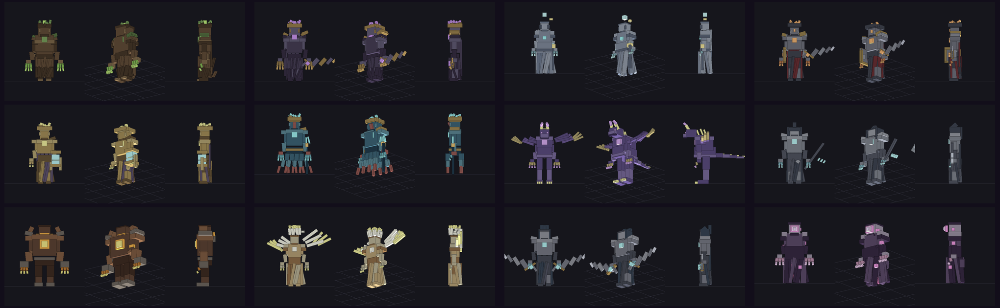
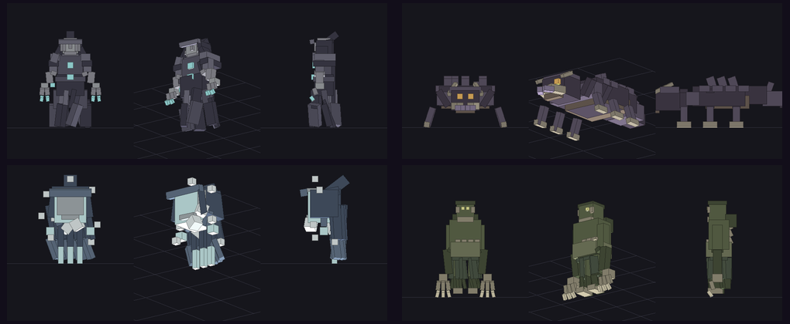
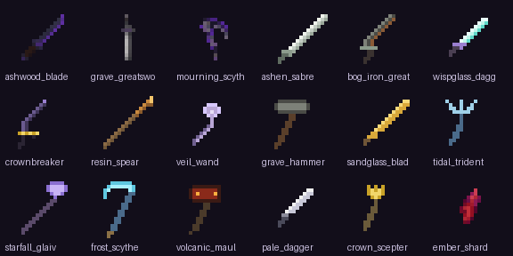

THE FALLノクテラの歴史
このMODの世界には、コードの外に物語があります。ゲーム内では、遺構と NPC の言葉から少しずつ明かされます。
世界の中心に「灯火」があり、季節も、夜明けも、死者の眠りも、すべて灯によって保たれていた。
八人の王が灯火のまわりに王国を築き、それぞれが冠の欠片 ——「刻印」—— を預かった。王たちは灯を守ることを誓った。
誓いは果たされなかった。灯火は失われ、空に灰の冠が昇る。世界はゆっくりと薄暮に沈み、時間は止まりかけた。
王たちは冠の者となり、刻印を守って各地に座す。プレイヤーは古代の門をくぐり、ノクテラへ踏み込む。
冠が緩み、灰の中に帰り道が開く。だがノクテラは残る。あなたは家へ帰れるが、この世界はここに在り続ける。
冠の下にあったのは王ではなく、世界が忘れた約束だった。失われた灯火は薄暮の中に隠されていた —— あなたはそれを運び出す。
FEATURESこのMODでできること
9つの地域
灰樹の森から黒鉄の火山まで、気候ごとに分かれた9つのバイオーム。それぞれに固有の植生・遺構・冠の者がいます。
12の冠の者
2〜3フェーズのボス戦。予兆モーション、専用の装飾HPバー、ボスごとのポートレート、そしてBGM。
ドロップ → クラフト
敵が落とす素材を集めて武器・防具を作り、ボス素材で +1〜+3 に強化。装備が整うほど危険な地域へ踏み込めます。
武器種の役割
剣・大剣・短剣・槍・薙刀・槌・大槌・三叉槍・鎌・杖・王笏。間合い・速度・水中強化・背後攻撃など挙動が異なります。
サーバー権威の戦闘
スタミナ・回避・パリィ・強攻撃・武器戦技。すべてサーバー側で判定されるので、マルチでも破綻しません。
物語と案内
NPC6体・データ駆動の会話・クエスト10本。探索手帳が「次の目的」を教えてくれるので迷いません。
WORLD9つの地域と構造物
灰樹の森
灰と枯れ木。古代神殿が眠り、腐朽の祭壇がある。
嘆きの湿原
霧に沈む沼地。墓所と未亡人が待つ。
黒冠遺跡帯
黒い廃墟。黒冠城と、その主が座す。
亡国の城塞跡
崩れた城壁の残骸。断罪の騎士長が巡回する。
紅砂の荒野
赤い砂丘と砂岩の露頭。砂嵐の色。
深淵の海
暗い水の底。水陸を支配する海帝。
星骸の浮島
紫の結晶と星屑。竜が空を舞う。
永劫の氷原
雪と氷の白い世界。処刑者が静かに待つ。
黒鉄の火山
マグマと黒石の地。巨神が炉を守る。
構造物
| 構造物 | 場所 | 内容 |
|---|---|---|
| 古代神殿 | 灰樹の森 | 深層岩の遺構＋腐朽の祭壇 |
| 亡国の城塞 | 各地 | 24×24。外壁・四隅の塔・北門・地下牢 |
| 地下墓所 | 各地の地下 | 地表3×3開口→12段階段→防水シェルの墓所 |
| 地下要塞 | 洞窟内 y-20〜-40 | 2部屋・宝箱・入口の縦穴 |
| 灰の聖域 | 灰樹の森 | 焚き火・テント・祭壇の野営地 |
| 黒冠城 | 黒冠遺跡帯 | 40×40。大門・塔・本丸・黒冠の玉座 |
| ネザー要塞 | ネザー | 24×24。溶岩堀・中央祭壇 |
| エンド城塞 | エンド | 18×18。黒曜石柱・プルプァの塔・祭壇 |
| 地域の祭壇 | 全9地域＋ネザー/エンド | 右クリックでその地域の冠の者を召喚 |
BESTIARY敵とボス


ボスのBGM
| トラック | 使われる場面 |
|---|---|
| Ashen Crown（灰冠の残響） | 腐朽の森王 / 悲嘆の聖女 / 断罪の騎士長 |
| Void Choir（虚空の聖歌） | 黒冠の王 / 墜星竜 / 深淵の海帝 / 名もなき観測者 / 忘却された騎士 |
| Iron Verdict（鉄の審判） | 灼鋼の巨神 / 白銀の処刑者 / 砂時計の双王 / 灯火の化身 |
| Nocterra（静寂） | ノクテラ入場時の環境音 |
COMBAT戦闘と装備
R 回避 ／ V 強攻撃 ／ F パリィ ／ G 武器戦技 ／ C 魔法（キーは設定画面で変更可）
武器 17 種

| 系統 | 武器 | 特徴 |
|---|---|---|
| 剣・曲刀 | 灰木の刃 / 灰繊維のサーベル / 砂刃 / 冠砕き | 標準。砂刃は攻撃速度+0.4、冠砕きは250%+スタン |
| 大剣 | 墓所の大剣 / 沼鉄の大剣 | 高威力・前方180°薙ぎ払い |
| 短剣 | 燐粉の短剣 / 白刃の短剣 | 3連刺し、白刃は背後攻撃+50% |
| 槍・薙刀 | 樹脂の長槍 / 星屑の薙刀 | 槍は攻撃間合い+1.5、薙刀は扇状一掃 |
| 槌・大槌 | 墓土の戦槌 / 火山の大槌 | 鈍足／着火＋ノックバック |
| 三叉槍・鎌 | 潮の三叉槍 / 霜の大鎌 / 嘆きの大鎌 | 三叉槍は水中+30%、鎌は移動速度低下 |
| 杖・王笏 | ベールの杖 / 冠の王笏 | 杖は魔力消費-20%、王笏は周囲の味方を強化 |
防具 3 セット
| セット | 防御力 | 性格 | 修理素材 |
|---|---|---|---|
| 灰装備 | 10 | 標準（革と鉄の中間） | 灰の繊維 |
| 樹脂装備 | 7 | 軽装・エンチャント向き | 朽葉の樹脂 |
| 霜装備 | 15 | 重装・toughness 1.0・ノックバック耐性 | 霜の結晶 |
PROGRESSION遊びの流れ
強化 +1 〜 +3
| 段階 | 必要素材 | 効果 |
|---|---|---|
| +1 | 武器 ＋ 砕けた冠片 ×1 | 攻撃力 +2 |
| +2 | 武器 ＋ 砕けた冠片 ×2 ＋ 地域素材 ×1 | 攻撃力 +4 |
| +3 | 武器 ＋ 砕けた冠片 ×2 ＋ 星屑の欠片 ×1 | 攻撃力 +6 |
GETTING STARTEDはじめかた（古代の門）
1. エンバーシャードを作る
作業台で 石炭 ×1 ＋ 火打石 ×1 ＋ 金インゴット ×1（シャップレス） → エンバーシャード ×2
火打石＝砂利＋鉄インゴット／金インゴット＝金鉱石の精錬／石炭＝石炭鉱石の精錬
2. 古代の門の骨組みを作る
作業台で 石レンガ ×8 ＋ エンバーシャード ×1（シャップレス） → 古代の門の骨組み ×8
石レンガ＝石 ×4 を精錬して石レンガ ×4
3. 門の枠を組む
- 骨組みで内側が横2×縦3以上（最大21×21）の四角い枠を作る
- 角も骨組みで埋める。内側は空気にしておく
- 設置する向きは自由（X軸・Z軸どちらでも可）
4. 点火する
骨組みのどこか1ブロックをエンバーシャードで右クリックすると点火し、灰冠の門（水色の通過面）が開きます。
- 内側が空気で埋まっているか（水・草・松明があると開きません）
- 枠が四角く閉じているか（角が欠けていないか）
- 内側の大きさが 横2×縦3 以上あるか
- クリックしたのが骨組みブロックか（内側の空気をクリックしても点火しません）
5. ノクテラへ
門の中に入るとノクテラへ転送されます。到着地点には帰還用の門が自動で作られ、初回は探索手帳と案内人「灰の番人」が手元に現れます。
6. 以降の流れ
手帳を右クリックすると「次の目的」が出ます。各地域の祭壇を右クリック → 冠の者を討つ → 刻印を集める → 5個で黒冠城の玉座、8個で真エンディング。
DOWNLOADダウンロードと導入
必要なもの
- Minecraft Java Edition 26.3
- NeoForge 26.3.0.99
- GeckoLib 5.5.7（26.3 対応版・必須）
- Java 25
手順
- NeoForge 26.3.0.99 を導入した Minecraft 26.3 を用意
mods/に GeckoLib 5.5.7 と nocterra-*.jar を入れる- 起動（クライアント／専用サーバーどちらでも可）
CHANGELOG更新履歴
NPC会話の 1〜9 キー選択を修正（26.3 のキーコード変更に対応）＋チャット回答フォールバック。 実績6種、討伐演出、構造物の宝箱、灰木の入手性改善、レシピページの画像と入手方法モーダルを追加。
古代の門の不具合を修正（点火・通過）。武器の属性エフェクト、PVP対応、 ドキュメント刷新（MODテーマ＋3×3クラフトレシピ）、AI生成アイコン33枚、探索手帳の「次の目的」を追加。
9地域・12ボス・武器17種・防具3セット・NPC6体/クエスト10本・8刻印と2つの結末・ 構造物10種・ボスBGM・探索手帳を収録。
骨組みをクリックしても点火できなかった問題を修正（周囲2ブロックから内部マスを探索）。 地形の Feature 順序・レシピのパースで起動しない不具合も修正済み。
FAQよくある質問
Q. 門に火がつかない
A. 内側が空気か／枠が閉じているか／内側が2×3以上かを確認してください。骨組みブロックをエンバーシャードで右クリックします（v0.1.0-alpha の修正で、上下左右どの骨組みからでも点火できます）。
Q. 門に入っても移動しない
A. v0.1.0-alpha の修正で解消済みです（門ブロックの当たり判定が残っていて入れなかった不具合）。最新の JAR を使用してください。
Q. ノクテラから戻れない
A. 到着地点に帰還門があります。入ると現世へ戻ります。門が壊れている場合は、現世の門が残っていればそこから再度入れます。
Q. NPCの質問に答えられない
A. 会話中に 1〜9 キーで選択肢を選ぶか、選択肢をクリックしてください（Esc で閉じる）。
それでも反応しない場合は /nocterra npc choose <番号> で回答できます（0 始まり）。
Q. 何をすればいいか分からない
A. 探索手帳（初回入手）を右クリックしてください。「次の目的」が表示されます。
Q. ボスが強すぎる
A. 敵のドロップ素材で武器を強化してください。+1〜+3 強化、防具3セット、地域素材の武器が用意されています。
NOTES注意と検証状況
このMODは開発中のビルドです。以下は実際に確認した範囲です。
| 要素 | 状態 |
|---|---|
| 9地域・構造物10種・12ボス・BGM・クラフト・NPC/クエスト・エンディング | 実装・実機確認 |
| 武器戦技の実戦バランス | 数値のみ検証 |
| マウス操作（会話クリック等）／ボイス試聴 | 未検証 |
| NPC会話の選択（キー1-9／チャット回答） | 実機確認 |
| 構造物の宝箱（テーマ別ルート） | 実機確認 |
| 実績（6種） | 読み込み・付与を確認 |
| 3構造物の自然生成 | /place でのみ確認 |
- GeckoLib 5.5.7 を必須依存とします（同梱していません）。
- 一部アセットは生成AIで作成しました（商用利用条件は未確認）。音楽は本MOD用のオリジナルです。
- Minecraft / NeoForge は各権利者の著作物です。本MODは非公式です。